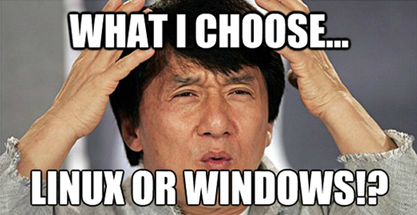

<!doctype html>
<html lang="en">
    <head>
        <title>Linux Users Group talk - Linux</title>

        <meta charset="utf-8">
        <meta name="description" content="Linux Users Group talk - Linux">
        <meta name="author" content="Vincent Wong">
        <meta name="apple-mobile-web-app-capable" content="yes" />
        <meta name="apple-mobile-web-app-status-bar-style" content="black-translucent" />
        <meta name="viewport" content="width=device-width, initial-scale=1.0, maximum-scale=1.0, user-scalable=no, minimal-ui">

        <link rel="stylesheet" href="css/reveal.css">
        <link rel="stylesheet" href="css/theme/moon.css" id="theme">
    </head>

    <body>
        <div class="reveal">
            <div class="slides">
                <section data-markdown><script type="text/template">
_LUG@UCLA tech talk_
---

Intro to Linux
===

___Presented by Vincent Wong___

lain@linux.ucla.edu
                </script></section>
                <section data-markdown><script type="text/template">
Connect to the LAN
---

* WiFi SSID: ASUS
* Password: 00000000
* These slides can then be accessed by:
* 192.168.1.2:8000 on your browser
                </script></section>
                <section data-markdown><script type="text/template">
Objective
---

* _Dispell myth that Linux is hard_
* Motivate you to use Linux, if not as a workstation, at least as a server
* Give some basic examples of Linux and command line usage
                </script></section>
                <section data-markdown><script type="text/template">
What is Linux?
---

* A **"kernel"**?
* A **"Unix-like and mostly POSIX-compliant computer operating system"** (Wikipedia)?
* A penguin?

</img>
                </script></section>
                <section data-markdown><script type="text/template">
GNU/Linux
---

_Academically speaking:_

* **User utilities**
  * coreutils (ls, cp, rm, etc.)
  * xorg (basis for graphical environment)
* **Kernel**
  * booting
  * interfacing with hardware
  * managing memory

_But so much more..._
                </script></section>
                <section data-markdown><script type="text/template">
# History lesson
                </script></section>
                <section data-markdown><script type="text/template">
Unix
---

* 1970s, AT&T Bell Labs
* **Philosophy**: do one thing and do it well
* Portable, multi-tasking, multi-user
* Set foundation for all future derivatives

_Then, in 1991..._
                </script></section>
                <section data-markdown><script type="text/template">
Linus Torvalds
---

</img>
                </script></section>
                <section data-markdown><script type="text/template">
Linux
---

* "Unix-like" because it follows the **Unix philosophy** (and uses many of the same tools)
* **Free** as in freedom, GPL-licensed
* Running the majority of email servers, web servers, phones (Android), ATMs, embedded devices, supercomputers, etc etc
* **You're using Linux everyday**
                </script></section>
                <section data-markdown><script type="text/template">
Free software
---

* Freedom to inspect, modify, contribute back code
* The world was different back then: proprietary software reigned, licensing disputes were numerous (this is what handicapped BSD)
* Linux thrived because it was simple and hackable
                </script></section>
                <section data-markdown><script type="text/template">
# Linux on your laptop

<br>
</img>
                </script></section>
                <section data-markdown><script type="text/template">
Daily life
---

* __You can do 200% of the things you can do on Windows and Mac OS X__
  * Word proessing (libreoffice)
  * Gaming (steam, wine)
  * Web browsing (firefox, chromium)
  * Email (thunderbird)
* Anything you need, Linux provides. *It's just a matter of getting used to a new workflow*
                </script></section>
                <section data-markdown><script type="text/template">
Package management
---

* Can download almost any app/program from package manager
* Secure and easy
* One centralized channel for updates
                </script></section>
                <section data-markdown><script type="text/template">
Distros
---

* Primary difference for most beginners:
  * Different package manager
  * Different default applications / graphical environment
  * System-specific quirks and out-of-the-box driver support
* Beginner friendly distros:
  * Linux Mint
  * Ubuntu
                </script></section>
                <section data-markdown><script type="text/template">
Desktop environment
---

* Easily switch to completely different environments
* More than just themes, but also default apps, customizability, workflow

_Windows doesn't have this. Mac OS X can run X windowed environments, but with great pain and many bugs._
                </script></section>
                <section data-markdown><script type="text/template">
# Linux on command line
                </script></section>
                <section data-markdown><script type="text/template">
Follow along!
---

* 192.168.1.2:8001 - live web tty
                </script></section>
                <section data-markdown><script type="text/template">
# Demo
                </script></section>
                <section data-markdown><script type="text/template">
# Starting out
                </script></section>
                <section data-markdown><script type="text/template">
Try it out on your laptop
---

* __virtual machine__
* __dual boot__

<br>
### Make sure to actually use it
                </script></section>
                <section data-markdown><script type="text/template">
Use it as a server
---

* __repurpose an old desktop__
* __virtual private servers__
  * DigitalOcean
  * AWS
  * Linode
                </script></section>
                <section data-markdown><script type="text/template">
Additional resources
---

* https://www.codecademy.com/learn/learn-the-command-line
* https://help.ubuntu.com/community/CommandlineHowto
* http://www.binarytides.com/linux-fun-commands/
                </script></section>
                <section data-markdown><script type="text/template">
# Thanks for coming!

linux.ucla.edu
                </script></section>
            </div>
        </div>
        <script src="lib/js/head.min.js"></script>
        <script src="js/reveal.js"></script>
        <script>
            Reveal.initialize({
                controls: true,
                progress: true,
                history: true,
                center: true,
                transition: 'slide',
                dependencies: [
                    { src: 'plugin/markdown/marked.js', condition: function() { return !!document.querySelector( '[data-markdown]' ); } },
                    { src: 'plugin/markdown/markdown.js', condition: function() { return !!document.querySelector( '[data-markdown]' ); } },
                ]
            });
        </script>
    </body>
</html>
